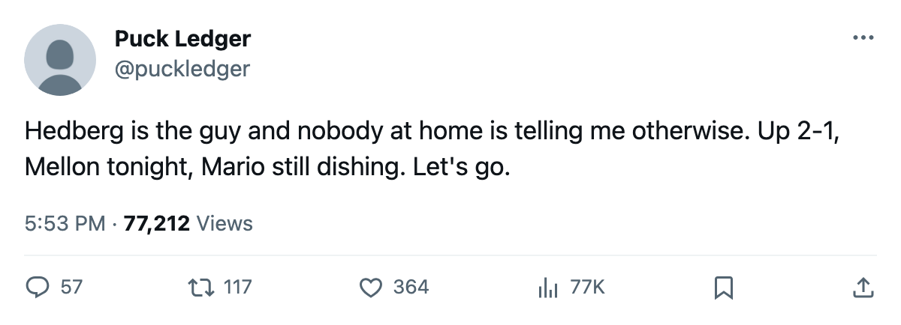
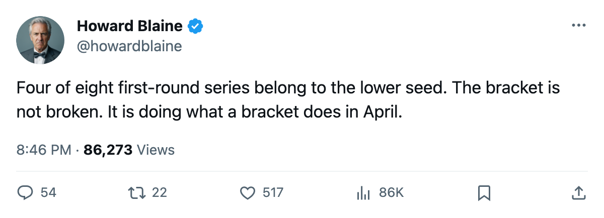

The Bracket, April 15: 2 potential sweeps on the road, and the lower seeds still own half the board
Four Game 4s tonight, eight clubs still live, and the only shutout in these playoffs belongs to Tampa Bay
 Howard BlaineSenior writer, The Blaine Rankings · The Hockey Gazette
Howard BlaineSenior writer, The Blaine Rankings · The Hockey Gazette
Tonight's slate has 4 games and 2 chances to close. The  Washington Capitals Capitals, up 3-0 on the
Washington Capitals Capitals, up 3-0 on the  Carolina Hurricanes Hurricanes, and the
Carolina Hurricanes Hurricanes, and the  Dallas Stars Stars, up 3-0 on the
Dallas Stars Stars, up 3-0 on the  Detroit Red Wings Red Wings, both play for the sweep on the road. The
Detroit Red Wings Red Wings, both play for the sweep on the road. The  Pittsburgh Penguins Penguins, the 7th seed, lead the 2-seeded
Pittsburgh Penguins Penguins, the 7th seed, lead the 2-seeded  New Jersey Devils Devils 2-1 and host Game 4. In the Northwest, the 5-seeded
New Jersey Devils Devils 2-1 and host Game 4. In the Northwest, the 5-seeded  Edmonton Oilers Oilers lead the 4-seeded
Edmonton Oilers Oilers lead the 4-seeded  Vancouver Canucks Canucks 2-1 with Game 4 at home. Four of the eight first-round series belong to the lower seed. No club's opponent appears in a later series on the schedule, and until one does, every series stays live whatever the score.
Vancouver Canucks Canucks 2-1 with Game 4 at home. Four of the eight first-round series belong to the lower seed. No club's opponent appears in a later series on the schedule, and until one does, every series stays live whatever the score.
| Series | Seed | Score | Last result | Next game |
|---|---|---|---|---|
| WSH v CAR | (4) v (5) | WSH 3-0 | G3 Apr 13: CAR 1-5 WSH | Apr 15 at CAR |
| PIT v NJ | (7) v (2) | PIT 2-1 | G3 Apr 13: PIT 2-1 NJ | Apr 15 at PIT |
| TB v BOS | (3) v (6) | TB 2-1 | G3 Apr 12: BOS 0-1 TB | Apr 14 at BOS |
| TOR v NYI | (1) v (8) | TOR 3-1 | G4 Apr 14: NYI 3-1 TOR | Apr 16 at TOR |
| DAL v DET | (2) v (7) | DAL 3-0 | G3 Apr 13: DET 1-2 DAL | Apr 15 at DET |
| PHX v COL | (8) v (1) | PHX 2-1 | G3 Apr 12: PHX 3-2 COL | Apr 14 at PHX |
| EDM v VAN | (5) v (4) | EDM 2-1 | G3 Apr 13: EDM 4-5 VAN | Apr 15 at EDM |
| ANA v NSH | (6) v (3) | ANA 2-1 | G3 Apr 12: ANA 3-2 NSH | Apr 14 at ANA |
East
Washington Capitals 3, Carolina Hurricanes 0. The Capitals scored 11 goals and surrendered 3 across three games. Game 3 on Tuesday at Carolina was 5-1, and Carolina Hurricanes managed exactly 1 goal in each.  Jaromir Jagr91, 33, has 7 assists and no goals, the highest point total on either side.
Jaromir Jagr91, 33, has 7 assists and no goals, the highest point total on either side.  Olaf Kolzig92 has a 1.00 goals-against average and a .955 save percentage. The series record is 6-2 on the season for Washington, with 5 regulation wins and 1 overtime win against 2 for Carolina. Game 4 is tonight in Raleigh. If the Capitals win, Carolina Hurricanes becomes the first club eliminated this postseason, though the schedule will not confirm it until Washington's opponent appears in a later series.
Olaf Kolzig92 has a 1.00 goals-against average and a .955 save percentage. The series record is 6-2 on the season for Washington, with 5 regulation wins and 1 overtime win against 2 for Carolina. Game 4 is tonight in Raleigh. If the Capitals win, Carolina Hurricanes becomes the first club eliminated this postseason, though the schedule will not confirm it until Washington's opponent appears in a later series.
Pittsburgh Penguins 2, New Jersey Devils 1. Pittsburgh opened with a 3-2 win at New Jersey Devils New Jersey, dropped Game 2 in Newark 1-3, and won Game 3 at Mellon Arena 2-1 on Tuesday.  Mario Lemieux85, who turns 40 in October, has 4 assists in 3 games.
Mario Lemieux85, who turns 40 in October, has 4 assists in 3 games.  Johan Hedberg88 is 2-1 with a 2.00 GAA and a .905 save percentage. On the New Jersey Devils side,
Johan Hedberg88 is 2-1 with a 2.00 GAA and a .905 save percentage. On the New Jersey Devils side,  Martin Brodeur97 is 1-1 at 1.50 with a .921 across 2 starts. The series finished the regular season even at 4-4 with 21 goals for Pittsburgh and 19 for New Jersey. Game 4 is tonight. The Penguins finished 18-23 at home.
Martin Brodeur97 is 1-1 at 1.50 with a .921 across 2 starts. The series finished the regular season even at 4-4 with 21 goals for Pittsburgh and 19 for New Jersey. Game 4 is tonight. The Penguins finished 18-23 at home.
 Tampa Bay Lightning 2,
Tampa Bay Lightning 2,  Boston Bruins 1. Tampa Bay leads after a 1-0 result in Game 3 on April 12, the only shutout in these playoffs so far.
Boston Bruins 1. Tampa Bay leads after a 1-0 result in Game 3 on April 12, the only shutout in these playoffs so far.  Cory Stillman82 has 4 goals in 3 games.
Cory Stillman82 has 4 goals in 3 games.  Glen Murray86, last season's Art Ross winner with 168 points, has 3 goals and 4 assists for Boston Bruins Boston. The series moved to Boston for Game 4 on April 14.
Glen Murray86, last season's Art Ross winner with 168 points, has 3 goals and 4 assists for Boston Bruins Boston. The series moved to Boston for Game 4 on April 14.
 Toronto Maple Leafs 3,
Toronto Maple Leafs 3,  New York Islanders 1. Toronto leads 3-1 after the New York Islanders Islanders won Game 4 3-1 on April 14, their first win of the postseason.
New York Islanders 1. Toronto leads 3-1 after the New York Islanders Islanders won Game 4 3-1 on April 14, their first win of the postseason.  Roberto Luongo97 has a 1.51 GAA and a .963 save percentage in 4 starts.
Roberto Luongo97 has a 1.51 GAA and a .963 save percentage in 4 starts.  Marian Gaborik99 leads all playoff scorers with 7 points in 4 games. Game 5 is Saturday in Toronto.
Marian Gaborik99 leads all playoff scorers with 7 points in 4 games. Game 5 is Saturday in Toronto.
West
Dallas Stars 3, Detroit Red Wings 0. Dallas scored 9 and allowed 4 across three games.  Marty Turco93 is 3-0 with a 1.22 GAA and a .925 save percentage.
Marty Turco93 is 3-0 with a 1.22 GAA and a .925 save percentage.  Mike Modano84, 34, has 4 goals and 5 points, and
Mike Modano84, 34, has 4 goals and 5 points, and  Jere Lehtinen82 has 1 goal and 4 assists. The three games produced 2 decided by 1 goal and 1 that went to overtime. Game 4 is tonight in Detroit, where Dallas went 5-2 in the regular season against this opponent.
Jere Lehtinen82 has 1 goal and 4 assists. The three games produced 2 decided by 1 goal and 1 that went to overtime. Game 4 is tonight in Detroit, where Dallas went 5-2 in the regular season against this opponent.

 Phoenix Coyotes 2,
Phoenix Coyotes 2,  Colorado Avalanche 1. The 8-seeded Phoenix Coyotes Coyotes lead the 1-seeded Colorado Avalanche Avalanche 2-1 after Game 3 on April 12, a 3-2 result in Phoenix. Every game has been decided by 1 goal, including Game 2, which went to overtime.
Colorado Avalanche 1. The 8-seeded Phoenix Coyotes Coyotes lead the 1-seeded Colorado Avalanche Avalanche 2-1 after Game 3 on April 12, a 3-2 result in Phoenix. Every game has been decided by 1 goal, including Game 2, which went to overtime.  Mike Johnson77 has 4 goals and 5 points.
Mike Johnson77 has 4 goals and 5 points.  Steve Konowalchuk78 has 5 assists and no goals.
Steve Konowalchuk78 has 5 assists and no goals.  Sean Burke84 is 2-1 with a 1.90 GAA and a .928 save percentage against a 112-point club whose
Sean Burke84 is 2-1 with a 1.90 GAA and a .928 save percentage against a 112-point club whose  Jamie Storr85 grades 84 in the Book. Game 4 was scheduled for April 14 in Phoenix.
Jamie Storr85 grades 84 in the Book. Game 4 was scheduled for April 14 in Phoenix.
Edmonton Oilers 2, Vancouver Canucks 1. The Edmonton Oilers Oilers won the first two in Vancouver Canucks Vancouver, 4-3 in overtime and 3-2, before the Canucks took Game 3 5-4 at Edmonton on Tuesday.  Mike York78 has 3 goals and 7 points in 3 games, tied with Gaborik for the playoff scoring lead.
Mike York78 has 3 goals and 7 points in 3 games, tied with Gaborik for the playoff scoring lead.  Radek Dvorak80 has 4 goals and 6 points.
Radek Dvorak80 has 4 goals and 6 points.  Markus Naslund87 has 4 goals and 2 assists for Vancouver. The series met 8 times in the regular season and produced 6 one-goal games, the most of any pairing in the league. Game 4 is tonight in Edmonton.
Markus Naslund87 has 4 goals and 2 assists for Vancouver. The series met 8 times in the regular season and produced 6 one-goal games, the most of any pairing in the league. Game 4 is tonight in Edmonton.
 Mighty Ducks of Anaheim 2,
Mighty Ducks of Anaheim 2,  Nashville Predators 1. The Mighty Ducks of Anaheim Ducks opened with a 3-2 road win in Nashville Predators Nashville, dropped Game 2 1-3, and won Game 3 3-2 at home.
Nashville Predators 1. The Mighty Ducks of Anaheim Ducks opened with a 3-2 road win in Nashville Predators Nashville, dropped Game 2 1-3, and won Game 3 3-2 at home.  Sergei Fedorov90 has 3 goals and 4 points in 3 games.
Sergei Fedorov90 has 3 goals and 4 points in 3 games.  Jean-Sebastien Giguere97 is 2-1 with a 2.33 GAA and a .887 save percentage. Game 4 was scheduled for April 14 in Anaheim.
Jean-Sebastien Giguere97 is 2-1 with a 2.33 GAA and a .887 save percentage. Game 4 was scheduled for April 14 in Anaheim.

